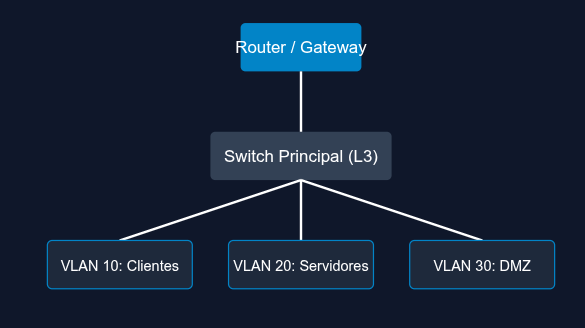

Pilares de Seguridad del Servidor
Bienvenido al portal técnico interno del departamento de informática.
- Cifrado perimetral y túneles SSH.
- Copias de seguridad incrementales.
- Control de acceso mediante firewall.
Demostración de Layout Horizontal
Servicio Web
Apache2 configurado con Virtual Hosts.
Servicio BBDD
MySQL activo en puerto 3306.
Servicio SSH
OpenSSH configurado para acceso remoto.
Topología de la Red Local

Puertos de Red Corporativos
| Servicio | Puerto | Protocolo |
|---|---|---|
| HTTP | 80 | TCP |
| HTTPS | 443 | TCP |
| SSH | 22 | TCP |
| DNS | 53 | UDP / TCP |